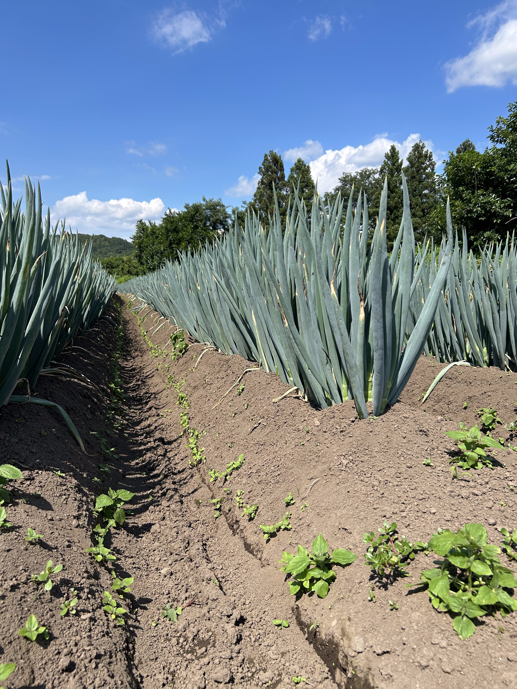
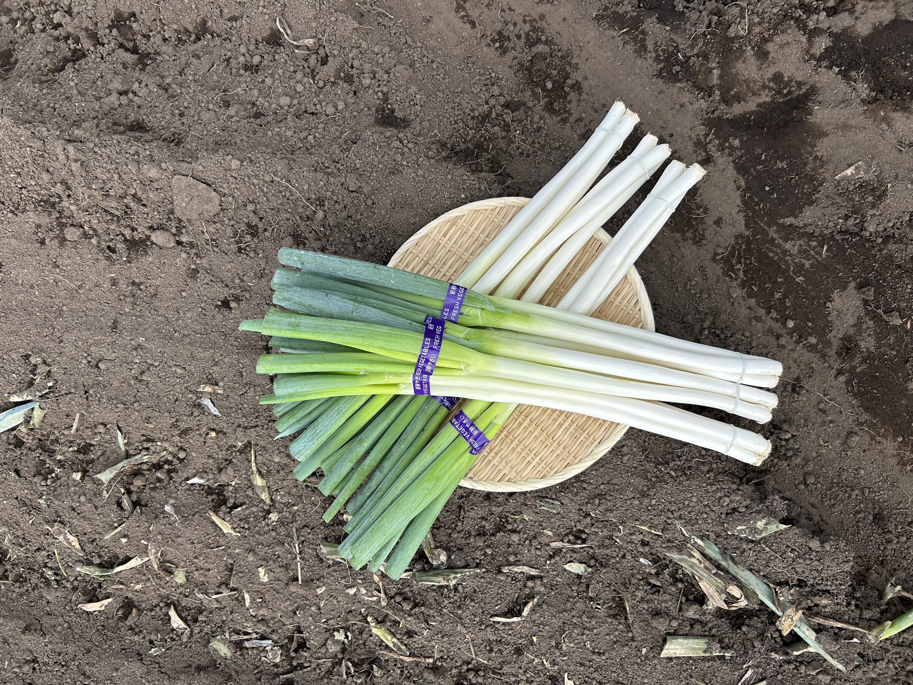

夏に届く長ねぎ
主な収穫時期は6月から9月。夏場でも品質のよい長ねぎを出荷できることが強みです。
SOFT FARM / 03
FRESH NAGANEGI
夏に育つ、甘い長ねぎ。
ABOUT

天栄村産の長ねぎの主な収穫時期は6月から9月。夏場でも良質な長ねぎを出荷できることが、この地域で育つ長ねぎの大きな魅力です。
一般的な長ねぎより糖度が高いとされ、甘みがあり、柔らかくジューシー。加熱すると甘さがさらに引き立ち、焼きねぎ、炒め物、鍋物にもよく合います。
畑の様子を見ながら、一本一本しっかりと土寄せをして育てる。手間を惜しまないことが、夏場でも甘みの詰まった長ねぎを育てる一番の近道です。

VARIETIES
主な収穫時期は6月から9月。夏場でも品質のよい長ねぎを出荷できることが強みです。
一般的な長ねぎより糖度が高いとされ、柔らかくジューシーな食感が楽しめます。
火を入れると甘さが際立ち、焼きねぎ、炒め物、鍋物など幅広い料理に向いています。

夏の長ねぎ畑
01 / QUALITY
畑の状態を見ながら土づくりと管理を重ね、夏場でもしっかりとした長ねぎを育てます。整った畝と健やかな葉色が、日々の手入れを物語ります。

収穫したての長ねぎ
02 / HARVEST
畑で育った長ねぎは、一本一本手で収穫し、丁寧に選別・調製してから束にします。土の香りと葉先のハリが、朝どりならではのみずみずしさを物語ります。
収穫できる期間は6月から9月の夏場だけ。旬のこの時期にしか味わえない甘みと食感を、ぜひ食卓や厨房でお楽しみください。
HOW TO BUY
直売所、契約飲食店、加工事業者への卸売など、様々な販売ルートをご用意しています。収穫できるのは6月から9月の夏場だけ。数量に限りがございますので、お早めのお問い合わせをおすすめします。